PORGY
& BESS
"The soul, sound and story of Catfish Row"
Welcome to Crotchets,
Quavers and Things
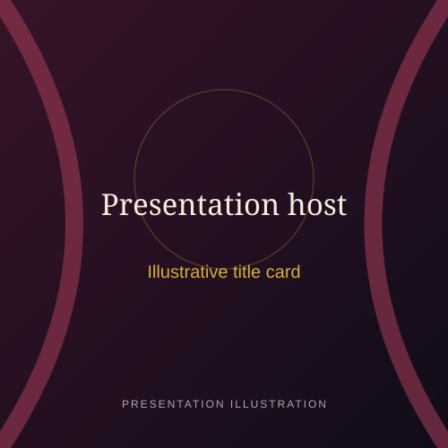
"Every opera is built from small things — a crotchet, a quaver, a breath. Together they become a story that crosses boundaries. I'm Gabz, and I'm here to guide you through the soul, sound and story of Porgy & Bess."
What to Expect
The Story
Love, violence and the search for hope in Catfish Row.
The Music
Five songs that carry the drama — and you can hear them.
The Legacy
A complex history that invites us to listen critically.
The Journey Ahead
From a novel to the operatic stage
The Novel
DuBose Heyward publishes Porgy.
The Play
Heyward and his wife adapt it for the stage.
The Opera
Gershwin's folk opera premieres on Broadway.
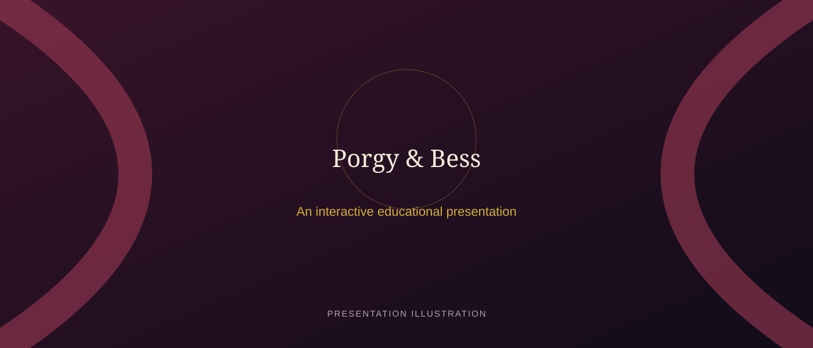
Boston opening night, 1935 · Richard H. Tucker / Library of Congress
The work grew through collaboration — not from a single author or a single musical tradition.
Three creative voices, one landmark score
Turn the windmill to reveal each creative voice
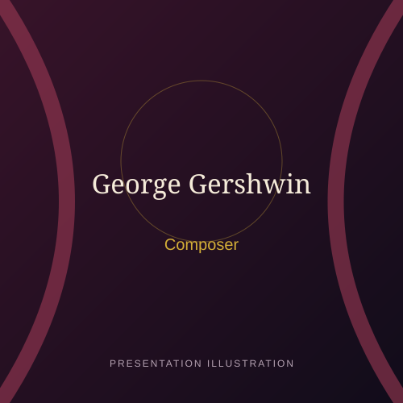
George Gershwin
Blended operatic writing with jazz, blues, spirituals and popular song to shape a distinctly American sound.
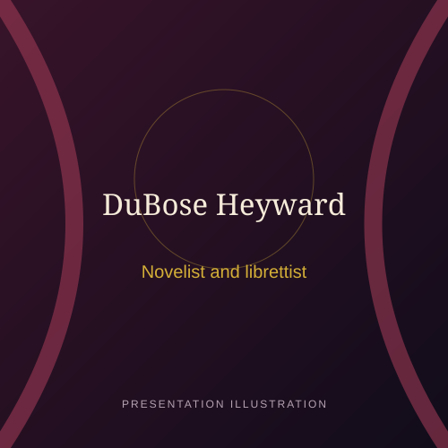
DuBose Heyward
Wrote the 1925 novel and collaborated on the opera's English libretto and lyrics.
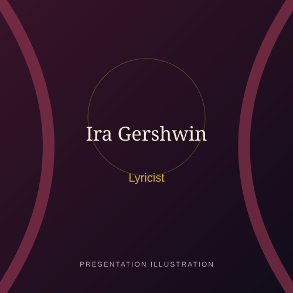
Ira Gershwin
George's brother, who collaborated on lyrics and helped refine the words and rhythms of the songs.
Meet the people of Catfish Row
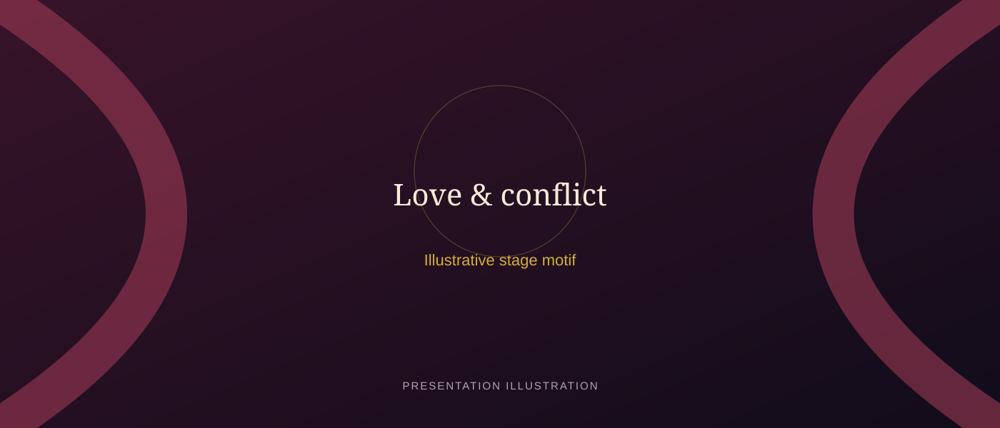
Eric Owens and Angel Blue as Porgy and Bess · Metropolitan Opera
Catfish Row — a close-knit waterfront community in Charleston, South Carolina, in the early 20th century.
Principal Characters — click a card to reveal
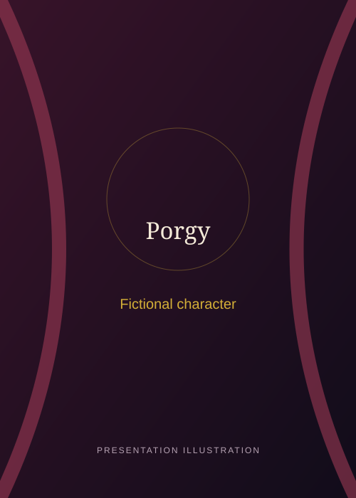
Porgy
A disabled beggar with a deep capacity for love and hope. His journey anchors the opera's emotional core.
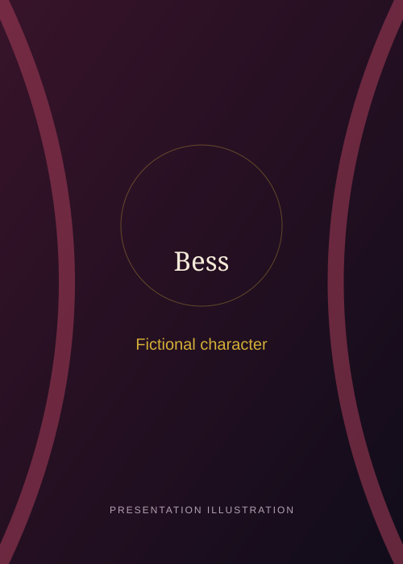
Bess
A woman caught between her troubled past and the possibility of redemption. Her shifting loyalties drive the drama.
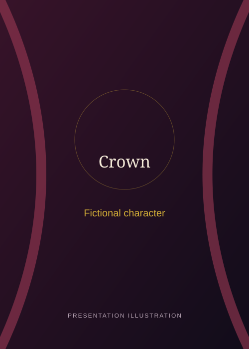
Crown
Bess's former lover — a dangerous presence whose return threatens the fragile peace of Catfish Row.
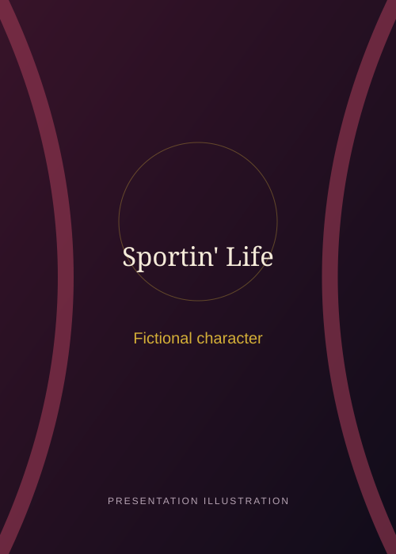
Sportin' Life
A charismatic hustler whose cynicism and charm offer Bess a tempting — and dangerous — alternative path.
Love, fear and betrayal
Click anywhere to send a pulse of light along the neural pathways
Love, violence and the search for hope
A Crime
Crown kills Robbins during a crap game. Bess is left behind.
A New Home
Porgy takes Bess in; affection grows into love and a fragile sense of belonging.
The Return
Crown reappears and threatens their relationship. Porgy later kills him during a struggle.
A Disappearance
Sportin' Life persuades Bess to leave for New York while Porgy is away.
A Journey
Porgy returns, learns Bess is gone and sets out for New York to find her.
The ending is unresolved: Porgy's journey expresses hope, but Bess's future remains uncertain.
Five songs that carry the drama
Explore each song card for notes. Recordings are not included in this repository.
audio/; they are separate from the score demonstration.
The Score, Alive
Hover any note to hear it — click a bar to play its full phrase
How does the music tell the story?
Vocal Characterisation
The vocal writing helps distinguish characters and emotional states. Porgy's music often feels grounded; Bess's shifting lines reflect conflict and vulnerability; Sportin' Life's music is rhythmically agile and persuasive.
The Community
The chorus is more than background. Songs, prayers and collective responses make Catfish Row feel like a living community whose joys and grief shape the drama.
A Complex Legacy
The opera created major opportunities for Black classical singers through its casting, while also attracting criticism for stereotypes and its representation of Black life.
The chorus of Porgy and Bess · Metropolitan Opera
A sound that crosses boundaries
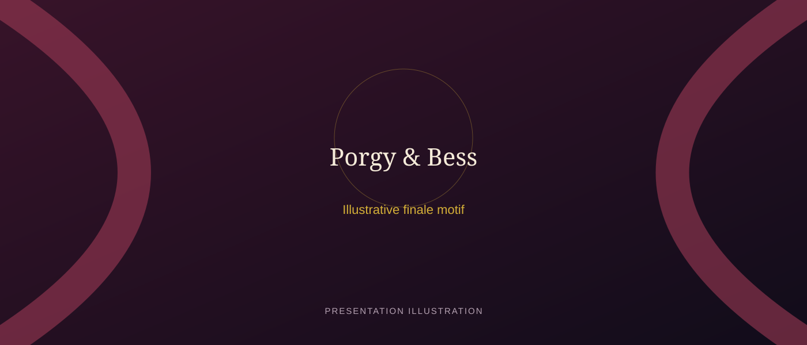
Porgy and Bess · Metropolitan Opera · Production photograph via BroadwayWorld
Porgy and Bess brings opera, jazz, blues and spiritual traditions into one theatrical world. Its lasting power lies in the way music gives voice to individual longing and collective experience — while its complicated history invites us to listen critically as well as emotionally.
References
Scholarly sources, archives and further reading.
Books & Monographs
Journal Articles
Archives
Thank You
For joining us on this journey through the soul, sound and story of Catfish Row.
— presented by Gabz · Crotchets, Quavers and Things